Fifteen color grades of the homepage hero, each written out as a real PNG in assets/hero-variants/ — drop any one straight into the hero's <img class="bg">. All carry the same brand vignette; the grades pull the photo toward the palette's greens, rusts, golds, and inks.
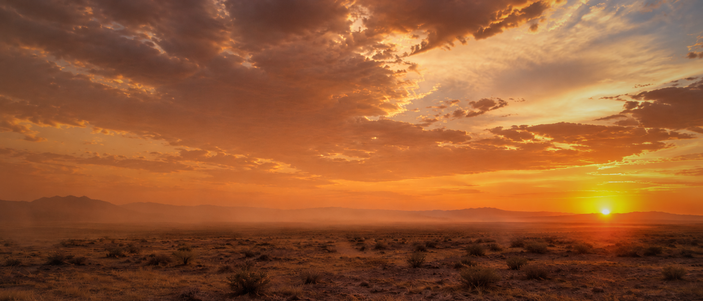
01 — OriginalUntouched, vignette only
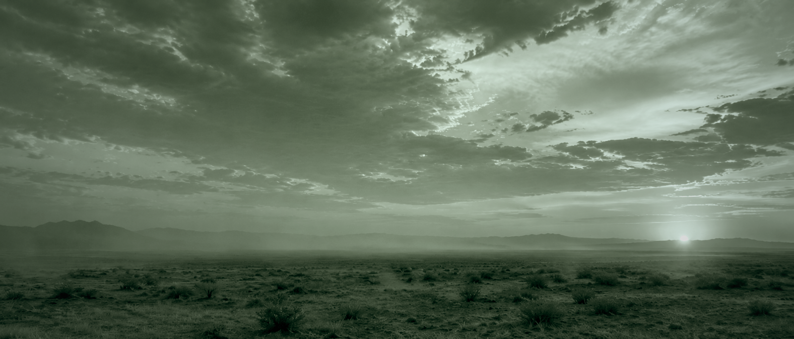
02 — Dusk duotoneBrand teal; matches the book covers
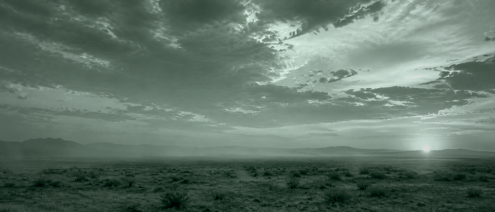
03 — Moss duotoneLighter green; softer, more open
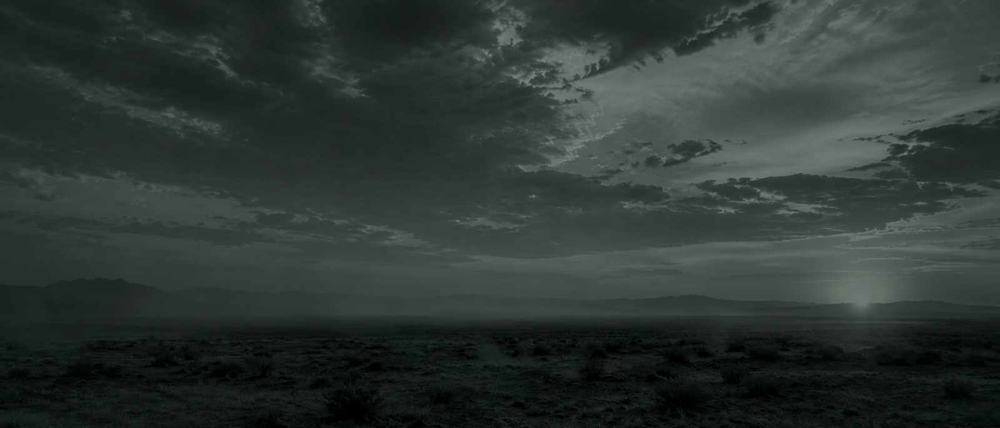
04 — Ink deepDarkest option; best for white type
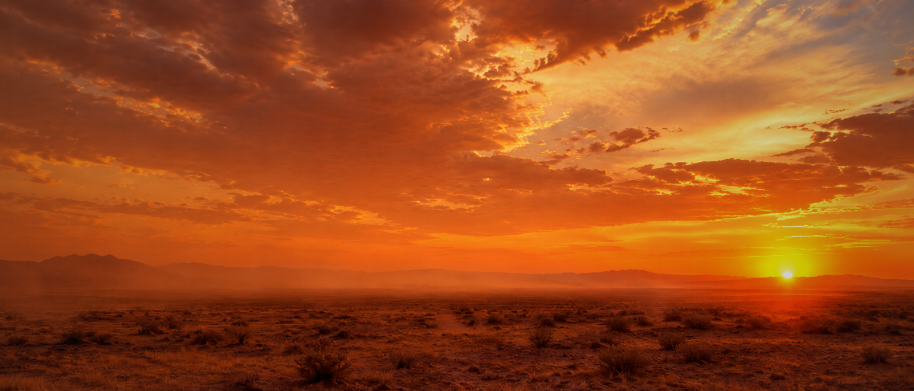
05 — Rust warmClosest to the original mood, warmer
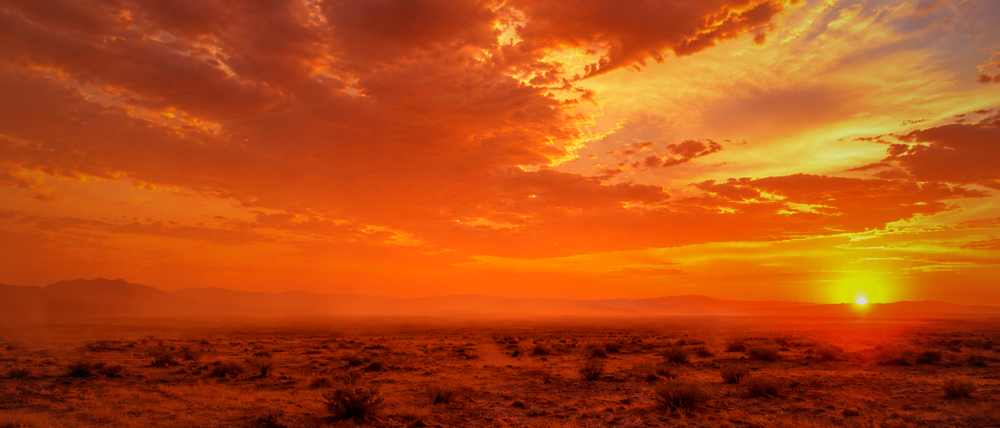
06 — Ember hotSaturated; pushes the brand red
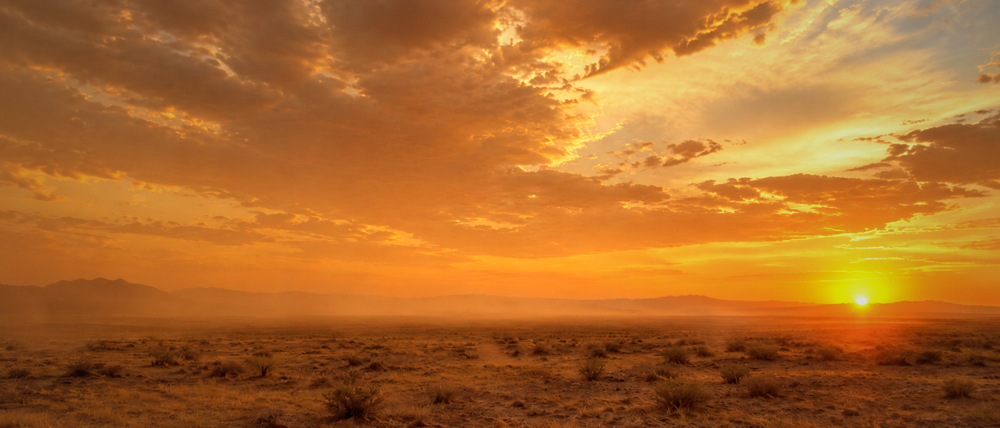
07 — Gold washBright, hopeful, low contrast
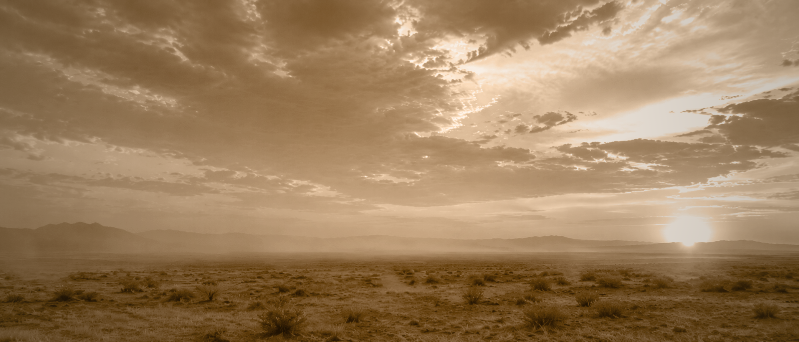
08 — Parchment sepiaArchival; pairs with light sections
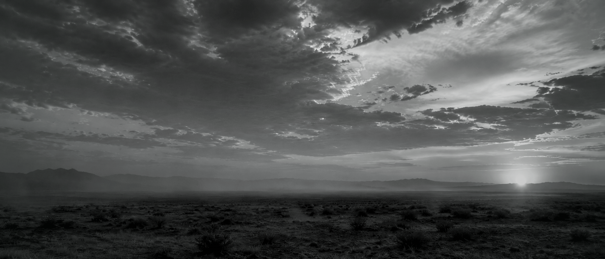
09 — Mono inkBlack & white; type-forward layouts
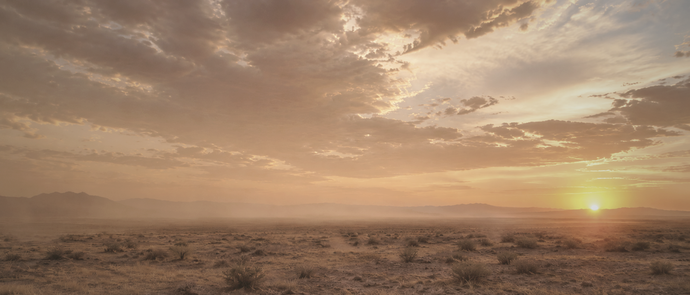
10 — Dusty fadedWashed out; "clings to the dust"
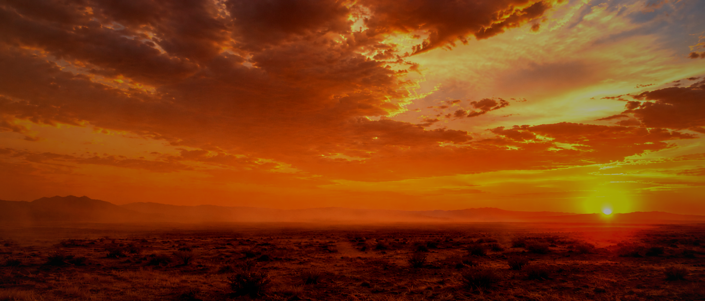
11 — High dramaHardest contrast; strongest clouds
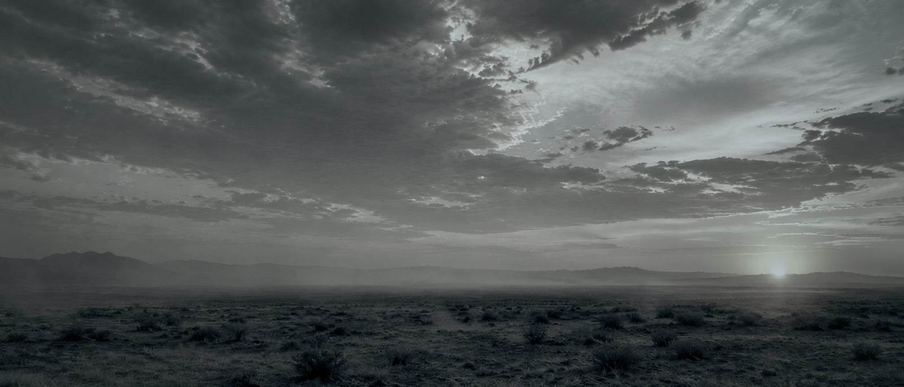
12 — Cool twilightBlue shift; reads as dusk, not dawn